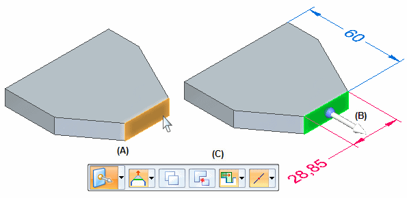

Move command (3D)
The Move command moves or rotates the selected model geometry or 3D sketch elements.
When you select model geometry that is eligible for moving or rotating, the steering wheel or 2D steering wheel handle, the Move command bar, and the Design Intent panel are displayed.
For example, when you click one or more model faces (A) or features, the steering wheel (B) and the Move command bar (C) are displayed.

You can then click the primary axis arrow (A) on the steering wheel to move the selected face (B). The adjacent faces update automatically.

You can use the options on command bar to control how the selected faces and adjacent faces react to the move or rotate operation.
For more information about moving 3D sketch elements, see the Move command (3D Sketching).
For more information, see Modifying models using the steering wheel and 2D steering wheel.